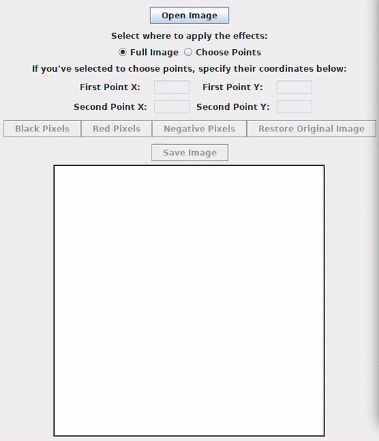

Negative andre
Posted on Oct 21, 2018 in digital image processing
Good news, everyone: I'm running again. I've restarted yesterday and I hope to continue for a long time. It's been a while, so I'm taking it easy.
With this great news in mind, let's talk about how we can work with pixels using the OpenCV library. Today's application is called Playing with Pixels. Here's what the user can do with it:
- Open an image from his file system;
- Choose a region or the whole image to apply operations;
- Change all of the pixels of the selected region to black;
- Change all of the pixels of the selected region to red;
- Change all of the pixels of the selected region to its color's complement;
- Restore the original image;
- Save a new image with one of the operations applied.
You can see the Playing with Pixels application in action below:
Wow! There's a lot of noise in this .gif.
Anyway, in this post, I won't explain everything step-by-step like previously. You can take a look at this link to see how I've created the user interface. To make things shorter, I will only explain parts of the most important methods.
Determining the Region of Interest
A region of interest (ROI) is a part of an image that we want to operate on. We can use any polygon to create ROIs. Here, we're using a rectangle. The user can choose the coordinates of the first point, the upper-left corner of the rectangle, and of the second point, the lower-right corner of the rectangle. If the user doesn't want to choose the points, the full image will compose our ROI. The radio buttons on the interface inform us what the user wants.
Also, to make it a more smooth user experience, we validate the user's input in the fields to make sure that he has chosen a valid positive integer (the getValueFromField() method is responsible for this) and that this number is a valid pixel of the image (you can't choose the pixel in row 3000 and column 2000 if the image's resolution is 500x500).
Let's take a look at the code that does what was described:
/**
* Method that detects the button pressed by the user and performs
* the appropriate operation.
*/
private void operationsButtonActionPerformed(ActionEvent e) {
/** Creating a full copy of the original image and storing it at
* another Mat object to keep the original unaltered. */
currentImage = originalImage.clone();
/** Checking which option the user chose in relation to where to
* apply the operation. If it's in the full image, then the first
* vertice of the rectangle that defines the region should be at the
* origin of the image and the second vertices at the last pixel, whose
* position is equal to the number of columns and rows that the image has.
* Else, if the user chose to insert himself the region of interest,
* the application must get the value from the fields and define the points
* accordingly.
*/
if (fullImageChosen) {
firstPointX = 0;
firstPointY = 0;
secondPointX = currentImage.cols();
secondPointY = currentImage.rows();
} else {
firstPointX = getValueFromField(firstPointXField);
firstPointY = getValueFromField(firstPointYField);
secondPointX = getValueFromField(secondPointXField);
secondPointY = getValueFromField(secondPointYField);
}
/**
* Creating the points according to the choice made by the user.
*/
firstPoint = new Point(firstPointX, firstPointY);
secondPoint = new Point(secondPointX, secondPointY);
/**
* Checking if the user chose a value outside of the image, something
* that is not acceptable. If the user chose a value beyond the image's
* height or width, then this value is readjusted to the image's border value.
*/
if (firstPoint.x > originalImage.width() || firstPoint.y > originalImage.height()
|| secondPoint.x > originalImage.width() || secondPoint.y > originalImage.height()) {
if (firstPoint.x > originalImage.width()) {
firstPoint.x = originalImage.width();
firstPointXField.setText(String.valueOf((int) firstPoint.x));
}
if (firstPoint.y > originalImage.height()) {
firstPoint.y = originalImage.height();
firstPointYField.setText(String.valueOf((int) firstPoint.y));
}
if (secondPoint.x > originalImage.width()) {
secondPoint.x = originalImage.width();
secondPointXField.setText(String.valueOf((int) secondPoint.x));
}
if (secondPoint.y > originalImage.height()) {
secondPoint.y = originalImage.height();
secondPointYField.setText(String.valueOf((int) secondPoint.y));
}
}
Our rectangle is created with the help from an object from the Rect class. We use its constructor to create a rectangle with the vertices defined by the chosen two points.
To get our ROI, we create a new object from the Mat class, roiMat. This object is created by using a constructor from the Mat class that allows us to pass a Mat object and a Rect object. The result is only the content from the Mat that resides in the area defined by the Rect. If the chosen points were (0,0) and (10,10), our roiMat would be a 10x10 square with the content of the original image from this exact area.
As we did previously, we need to pass the content from the ROI to a byte array, our good old buffer, a process that we've seen here before.
The following code creates our ROI and pass its content to our buffer:
/**
* Creating a Mat object with the region of interest chosen by the user.
*/
Mat roiMat = new Mat(currentImage, new Rect(firstPoint, secondPoint));
/** We need to create a byte array that will store the matImage contents.
* We find the size of this array through the number of elements in the
* Mat object. */
int bufferSize = roiMat.channels() * roiMat.cols() * roiMat.rows();
/** Creating the byte array. */
byte[] buffer = new byte[bufferSize];
/** Using the get() method to put all of the elements of the region of interest
* inside the byte array. */
roiMat.get(0, 0, buffer);
Changing the pixels of the ROI
In our application, we store the information about which button the user clicked with the buttonChosen String and use it as the key to a switch statement to determine what should be done. If the user wants to show it back the original image, we only need to assign our currentImage Mat object to the originalImage object that we made sure it wasn't going to be altered in any circumstance. In the other cases, we need to alter the pixels in our buffer and then put it back in the roiMat before showing it again on the screen.
To alter the pixels, we can use one of the two helper methods: changePixelsColor() and changePixelsToNegative(). The first one will be used if we want to change the roiMat pixels to a single color (in this case, black or red). The second one will be used if we want the find the negative of the ROI.
This piece of the puzzle can be seen here:
/** Creating a String variable to know which button was clicked. */
String buttonChosen = e.getActionCommand();
/**
* Using a switch statement to control what should be done based
* on which button the user clicked.
* If the user chose the black pixels option, we must change the
* chosen pixels to the color black throught the call of the
* changePixelsColors() method. The same in case of the red pixels
* option, but using the color red.
* If the user chose the negative option, we change the chosen pixels
* using the calculatePixelNegative() method.
* If the user chose the restore option, we only need to get the original
* pixels.
*/
switch (buttonChosen) {
case "Black Pixels":
changePixelsColor(buffer, bufferSize, new int[] {0, 0, 0});
break;
case "Red Pixels":
changePixelsColor(buffer, bufferSize, new int[] {0, 0, 255});
break;
case "Negative Pixels":
changePixelsToNegative(buffer, bufferSize);
break;
case "Restore Original Image":
currentImage = originalImage;
default:
break;
}
/**
* Putting the newly calculated pixels values on the region of
* interest with the put() method.
*/
roiMat.put(0, 0, buffer);
/**
* Calling the showImage() method the display the new image on
* the screen.
*/
The Java unsigned problem
If you've worked with Java before, you should know that this programming language doesn't have an unsigned data type. For instance, a byte data type is an 8-bit signed two's complement integer. It can represent a number from -128 to 127. If we're working with 8-bit images and representing the values in a byte array, how are we going to put the value 200 if a byte in Java can't represent this number?
The answer isn't so trivial, but it's a simple one.
First, we're going to take our byte and use the AND operator with the number 0xff. 0xff is the hexadecimal FF, which is an integer of value 255. Its binary representation is 00000000000000000000000011111111, a 32-bit integer (int data type in Java). When we do this, we have a 32-bit number where the last 8 bits are our desired value and the rest is 0. This means that we can do operations between integers and cast it back to a byte to put it in the array.
Changing the values in the buffer
In the case of the changePixelsColor(), this method receives an int array of length three where each position represents the value from each channel. The first position contains the blue channel, the second has the green channel and the third has the red channel. If we want the color red, we pass it new int[] {0, 0, 255}.
Inside the method, we iterate through the buffer and put the values of the desired color in the channels. To change it to a black pixel value, we pass new int[] {0, 0, 0}. For green? new int[] {0, 255, 0}. For a color that I don't know? new int[] {31, 200, 109}.
The changePixelsToNegative() method is a little different, but not much. The negative color of a color is its complementary color.
Wow, that's a lot of colors.
Don't worry! This value is the distance between the color value and 255. In this case, we need to get the current value in the buffer, find the distance to 255 and replace the value in the buffer.
Here's the code:
/**
* Helper method to calculate the negative complement of each value in each
* channel on every pixel in the region of interest. Since Java does not have
* any unsigned byte data type, we must cast the value to an int using the AND
* operator with 0xff, find the complement (distance from the number to 255) and
* cast the result to a byte type.
* @param buffer - byte array with the values of the pixels from an image.
* @param bufferSize - size of the byte array.
*/
private void changePixelsToNegative(byte[] buffer, int bufferSize) {
for (int i = 0; i < bufferSize; i++) {
if (i % 3 == 0) {
buffer[i] = (byte) (Math.abs((buffer[i] & 0xff) - 255));
buffer[i+1] = (byte) (Math.abs((buffer[i+1] & 0xff) - 255));
buffer[i+2] = (byte) (Math.abs((buffer[i+2] & 0xff) - 255));
}
}
}
/**
* Helper method to change the pixel value of each value in each channel on every
* pixel in the region of interest. Here, we must pass an array of lenght three with
* the new pixel value. Since Java does not have any unsigned byte data type, we must pass
* an int array and use the AND operator with 0xff, then cast it to a byte type.
* @param buffer - byte array with the values of the pixels from an image.
* @param bufferSize - size of the byte array.
* @param newPixelValue - array with the values of each channel of the new color
* that should be put in place of the current one, respecting the BGR model. It must be
* an array of lenght three, where the number in the first position represent the blue
* channel, the one in the second position represent the green channel and the third position
* represents the red color.
*/
private void changePixelsColor(byte[] buffer, int bufferSize, int[] newPixelValue) {
for (int i = 0; i < bufferSize; i++) {
if (i % 3 == 0) {
buffer[i] = (byte) (newPixelValue[0] & 0xff);
buffer[i + 1] = (byte) (newPixelValue[1] & 0xff);
buffer[i + 2] = (byte) (newPixelValue[2] & 0xff);
}
}
}
And I guess that's it! I hope that you've enjoyed today's post. Before I go, let's just see what color is new int[] {31, 200, 109}:
Awesome!